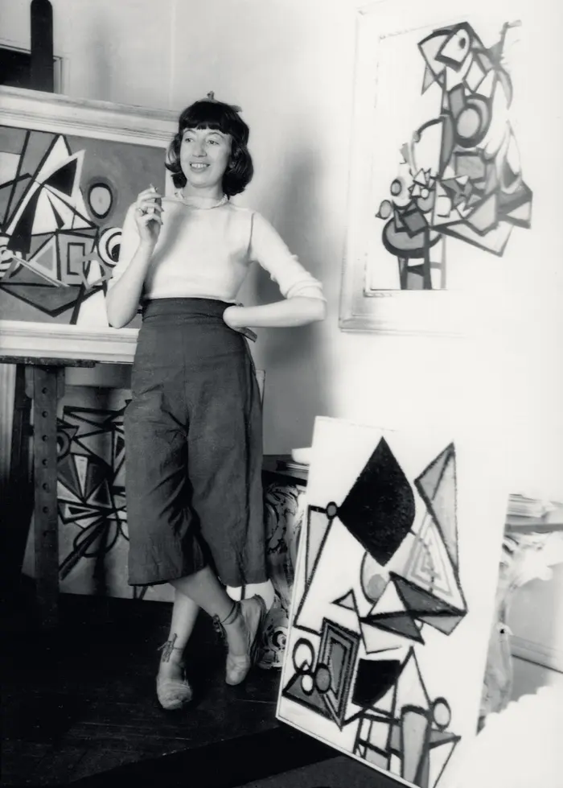

XX secolo
Gertrud Arndt
1903–2000
Fotografa e designer Bauhaus, nota per autoritratti sperimentali.
XX secolo
1903–2000
Fotografa e designer Bauhaus, nota per autoritratti sperimentali.

Questa pagina è predisposta per raccogliere la videopresentazione realizzata dagli studenti, eventuali immagini aggiuntive e link di approfondimento.
data/artists.json.